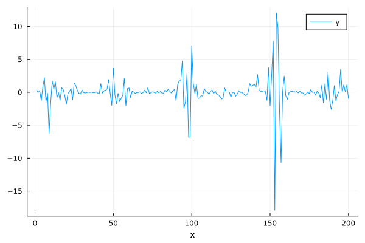
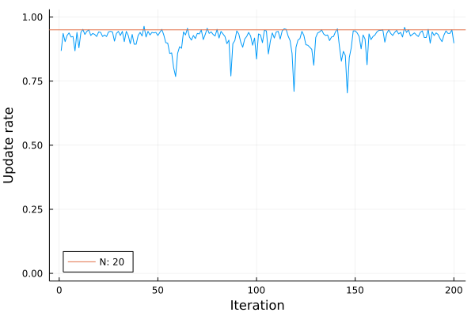

Particle Gibbs for Gaussian state-space model
using AdvancedPS
using Random
using Distributions
using PlotsWe consider the following linear state-space model with Gaussian innovations. The latent state is a simple gaussian random walk and the observation is linear in the latent states, namely:
\[ x_{t+1} = a x_{t} + \epsilon_t \quad \epsilon_t \sim \mathcal{N}(0,q^2)\]
\[ y_{t} = x_{t} + \nu_{t} \quad \nu_{t} \sim \mathcal{N}(0, r^2)\]
Here we assume the static parameters $\theta = (a, q^2, r^2)$ are known and we are only interested in sampling from the latent states $x_t$. To use particle gibbs with the ancestor sampling update step we need to provide both the transition and observation densities.
From the definition above we get:
\[ x_{t+1} \sim f_{\theta}(x_{t+1}|x_t) = \mathcal{N}(a x_t, q^2)\]
\[ y_t \sim g_{\theta}(y_t|x_t) = \mathcal{N}(x_t, q^2)\]
as well as the initial distribution $f_0(x) = \mathcal{N}(0, q^2/(1-a^2))$.
To use AdvancedPS we first need to define a model type that subtypes AdvancedPS.AbstractStateSpaceModel.
Parameters = @NamedTuple begin
a::Float64
q::Float64
r::Float64
end
mutable struct LinearSSM <: AdvancedPS.AbstractStateSpaceModel
X::Vector{Float64}
θ::Parameters
LinearSSM(θ::Parameters) = new(Vector{Float64}(), θ)
endand the densities defined above.
f(m::LinearSSM, state, t) = Normal(m.θ.a * state, m.θ.q) # Transition density
g(m::LinearSSM, state, t) = Normal(state, m.θ.r) # Observation density
f₀(m::LinearSSM) = Normal(0, m.θ.q^2 / (1 - m.θ.a^2)) # Initial state densityWe also need to specify the dynamics of the system through the transition equations:
AdvancedPS.initialization: the initial state densityAdvancedPS.transition: the state transition densityAdvancedPS.observation: the observation score given the observed dataAdvancedPS.isdone: signals the end of the execution for the model
AdvancedPS.initialization(model::LinearSSM) = f₀(model)
AdvancedPS.transition(model::LinearSSM, state, step) = f(model, state, step)
function AdvancedPS.observation(model::LinearSSM, state, step)
return logpdf(g(model, state, step), y[step])
end
AdvancedPS.isdone(::LinearSSM, step) = step > TₘEverything is now ready to simulate some data.
a = 0.9 # Scale
q = 0.32 # State variance
r = 1 # Observation variance
Tₘ = 200 # Number of observation
Nₚ = 20 # Number of particles
Nₛ = 500 # Number of samples
seed = 1 # Reproduce everything
θ₀ = Parameters((a, q, r))
rng = Random.MersenneTwister(seed)
x = zeros(Tₘ)
y = zeros(Tₘ)
reference = LinearSSM(θ₀)
x[1] = rand(rng, f₀(reference))
for t in 1:Tₘ
if t < Tₘ
x[t + 1] = rand(rng, f(reference, x[t], t))
end
y[t] = rand(rng, g(reference, x[t], t))
endHere are the latent and obseravation timeseries
plot(x; label="x")
xlabel!("t")
plot(y; label="y")
xlabel!("x")
AdvancedPS subscribes to the AbstractMCMC API. To sample we just need to define a Particle Gibbs kernel and a model interface.
model = LinearSSM(θ₀)
pgas = AdvancedPS.PGAS(Nₚ)
chains = sample(rng, model, pgas, Nₛ; progress=false);particles = hcat([chain.trajectory.model.X for chain in chains]...)
mean_trajectory = mean(particles; dims=2);This toy model is small enough to inspect all the generated traces:
scatter(particles; label=false, opacity=0.01, color=:black)
plot!(x; color=:darkorange, label="Original Trajectory")
plot!(mean_trajectory; color=:dodgerblue, label="Mean trajectory", opacity=0.9)
xlabel!("t")
ylabel!("State")
We used a particle gibbs kernel with the ancestor updating step which should help with the particle degeneracy problem and improve the mixing. We can compute the update rate of $x_t$ vs $t$ defined as the proportion of times $t$ where $x_t$ gets updated:
update_rate = sum(abs.(diff(particles; dims=2)) .> 0; dims=2) / Nₛand compare it to the theoretical value of $1 - 1/Nₚ$.
plot(update_rate; label=false, ylim=[0, 1], legend=:bottomleft)
hline!([1 - 1 / Nₚ]; label="N: $(Nₚ)")
xlabel!("Iteration")
ylabel!("Update rate")
This page was generated using Literate.jl.